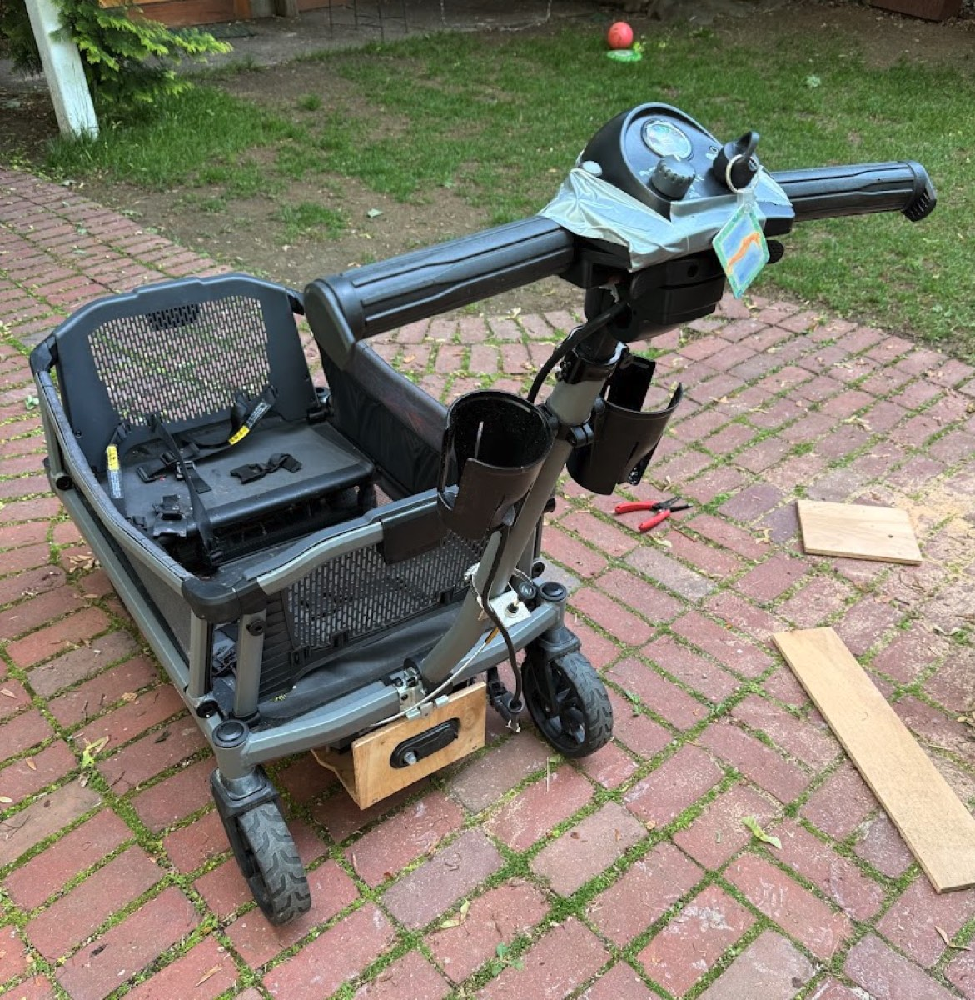

Personal Project
Motorized Kid Transporter
The electric drivetrain from Rascal Venture Scooter in a Veer City Cruiser XL

The Problem
I have three young boys, 5, 4, and 2 years old! I needed a way for anyone to be able to transport them, their gear, and even their bikes, around Cambridge. Including up the ramp (which they love) at the Department of Art, Film, and Visual Studies, near our home.
So I added an electric motor to the Veer City Cruiser XL — a stroller-wagon that's already built like a small vehicle — to make the first sidewalk-worthy electric kid transporter of its kind.
Building it
- I removed the front wheels of the wagon, built a plywood chassis and bolted the scooter's drive wheels on. I then extended and ran the cables to the battery box I built to sling under the rear wheels. The scooter controls weren't a perfect fit but close enough to wrap around the steering column of the scooter.
- Scooter controls carry over intact: key switch, speed dial, and thumb throttle on the handlebars, so the whole thing is operated from behind at walking pace.
- Scooters come with a mechanical clutch that disengages the wheels from the motor, to make it possible to move the scooter in tight spaces when powered off. I bought a choke cable for a Ford F150 and attached it to the steering column, connecting it to serve as the clutch.
- The wagon's seats, harnesses, and mesh sides stay stock!.
- It works and handles like a dream. I can even hang their bikes on the steering handles!